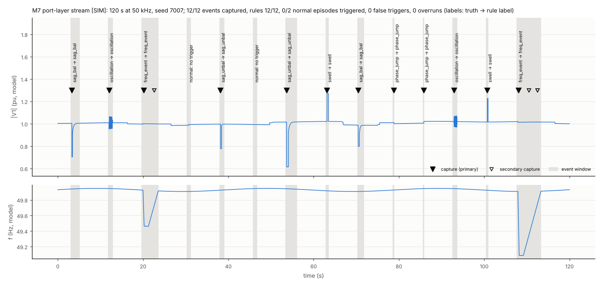

Firmware: one C core, three targets
The Python implementation is the reference. A single C99 float32 core reproduces it and runs on a PC (verification),
on TI C2000 microcontrollers (monitor-only port layer) and in this browser (WebAssembly). Its version string:
gridmon-core 0.6.0 (model gbm_embedded seed0 sha256 e25501759a5f84fe; tables 17f72797b3f4fbba; gbm on).
C core API and memory
gm_ctx_t ctx; gm_result_t res;
gm_init(&ctx);
gm_process_record(&ctx, x /* int16 [ab | bc | ca], 3 x 5000 */, 5000, lsb_pu, &res);
/* res.rule_label, res.rule_reason, res.onset_estimate_s -> PRIMARY output (rules)
res.gbm_label, res.gbm_proba[7] -> ADVISORY output (logged, never acted on)
res.features[37] + res.feature_valid[37], res.flags, res.status */Software-in-the-loop: does the C core reproduce Python?
Golden vectors: 27/27 pass on every intermediate trace, feature, rule label and reason. Sanitizer build (address + undefined behaviour): pass. The sealed test sets were read for equivalence only. "Outside" counts feature values beyond the documented float32 tolerances under the comparison gates; the only cases are float32 ties in the argmin of |V1| that feed the Bollen ratio rho, on records that are not dips (the rules use rho only in a dip).
WebAssembly build (this site)
Toolchain: zig 0.17.0 cc -target wasm32-wasi -mexec-model=reactor, 44,994 bytes, no imports. Equivalence with the native C core on the golden
vectors and every explorer record: see reports/m8_wasm_equivalence.json in the repository.
C2000 port layer (monitor-only)
The control interrupt calls gm_port_push() once per sample: calibration trim (mandatory), optional line-to-neutral to line-to-line
conversion, a polyphase anti-alias filter and decimation to 5 kHz into a 50,352-byte structure that includes a 1.6 s
ring buffer. A background task triggers, places a 1 s record around the estimated onset, classifies it and publishes telemetry. It never
writes a control variable.
Host stream test (120 s at 50,000 Hz, seed 7007)

C28x compile and size (L2)
Validation ladder
Integration notes
- TIDA-01606 (three-phase, 50 kHz control ISR): one
gm_port_push()call after the control law; decimation by 10; LN or LL sensing selectable (which one the board uses is still to be confirmed from TI's SDK source); per-channel calibration trim is mandatory because the rules are calibration-sensitive; background processing in the main loop or on CPU2. - TIDM-HV-1PH-DCAC (single-phase): one board sees one phase, so the three-phase features do not exist there. For three boards 120° apart, run this unchanged three-phase core on a separate monitor node (for example a LaunchPad with isolated line-to-neutral sensing of all three phases), independent of the inverter controllers. A single-phase variant is Stage 2.
- Safety: both reference designs are high-voltage hardware (800 V and 380 V DC). Board work only under qualified supervision, with isolated debug connections, and only after the LaunchPad steps (L3, L4) have passed. The module stays monitor-only until separately validated.